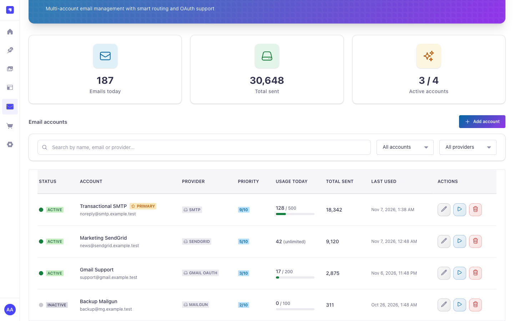
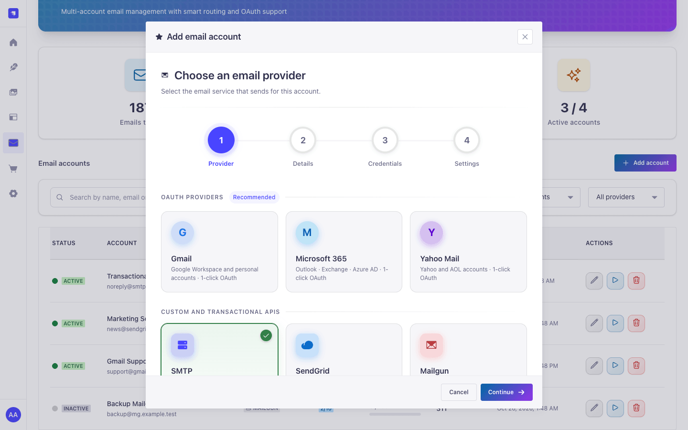
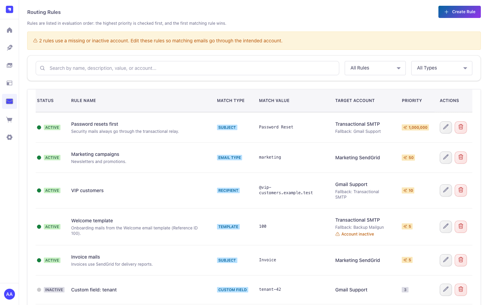
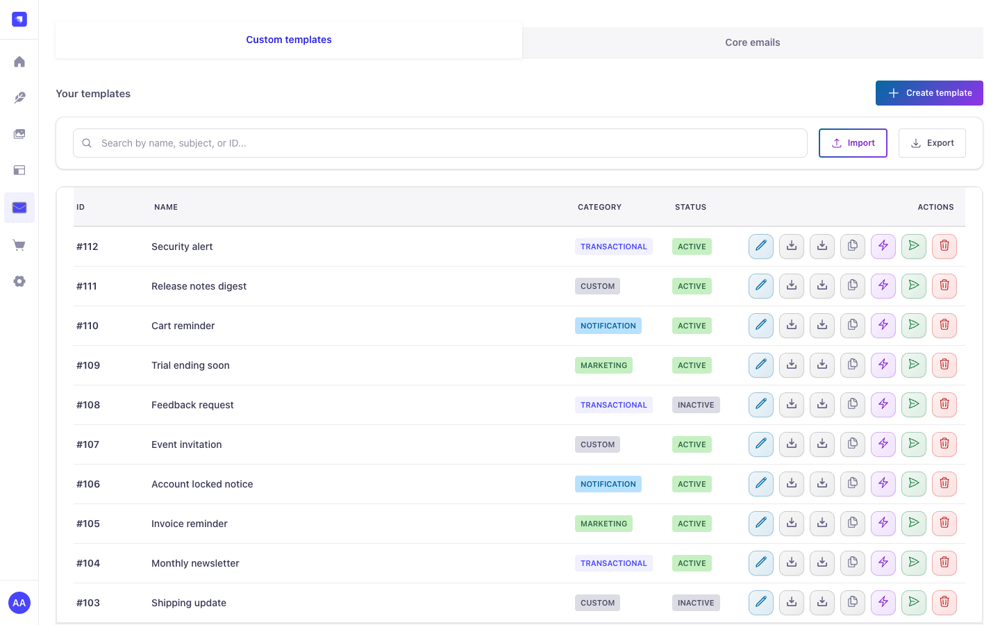
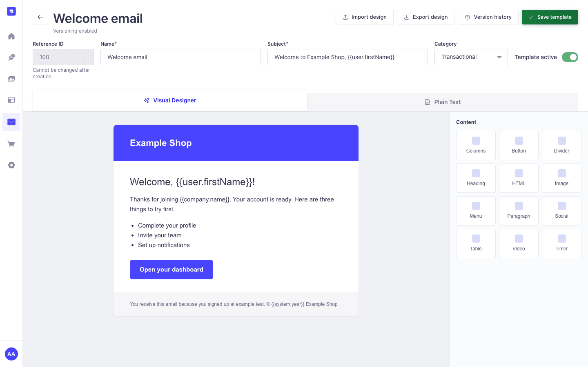
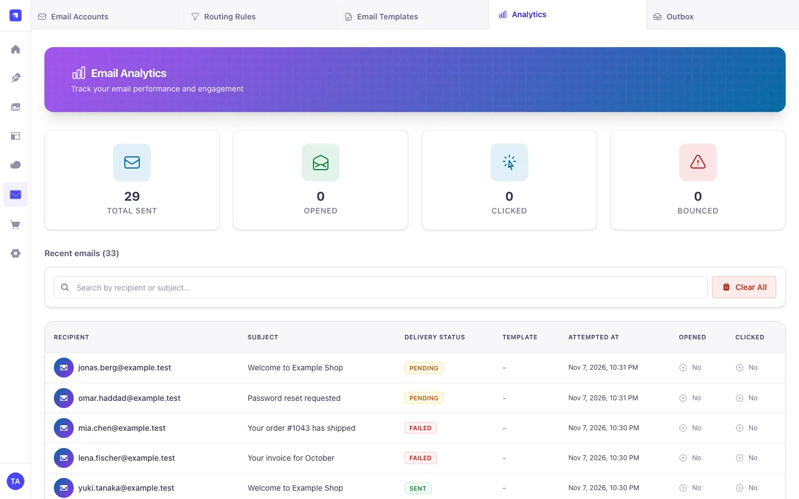
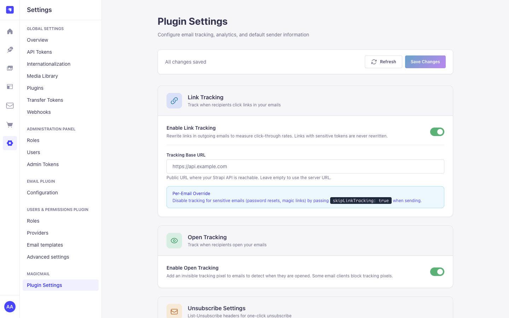
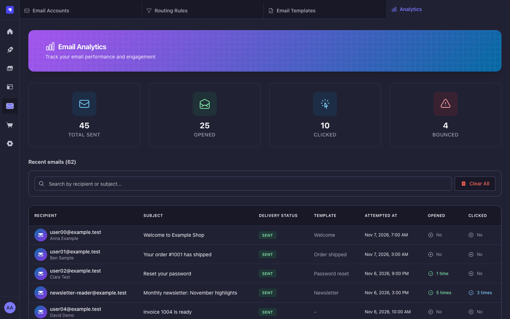
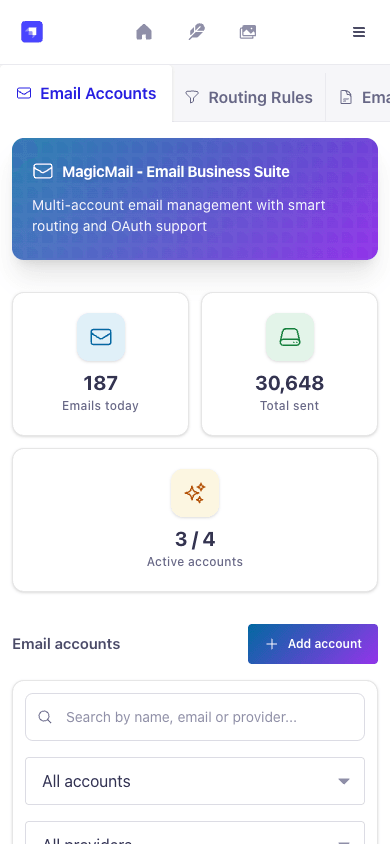
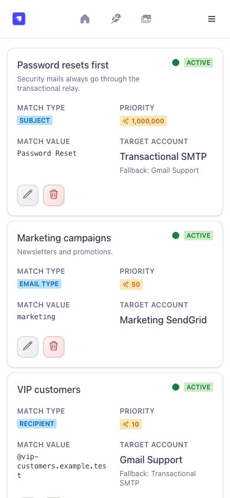

Email accounts
Six providers: Gmail, Microsoft 365 and Yahoo with OAuth 2.0, any SMTP server (optional DKIM), SendGrid and Mailgun. Hourly and daily quotas, priority, a primary account, a direct test send and a test through the Strapi email service.
Connect Gmail, Microsoft 365, Yahoo, SMTP, SendGrid or Mailgun, decide which account
sends which email, design templates and follow delivery, opens and clicks. Your existing
strapi.plugin('email') calls keep working.
All screenshots show synthetic data (example.test addresses) on an isolated
Strapi 5.61 host. Select an image to open it at full size.










Everything lives in the Strapi admin under MagicMail, in five languages, light and dark.
Six providers: Gmail, Microsoft 365 and Yahoo with OAuth 2.0, any SMTP server (optional DKIM), SendGrid and Mailgun. Hourly and daily quotas, priority, a primary account, a direct test send and a test through the Strapi email service.
Four steps: provider, details, credentials, settings. OAuth connects in a popup and shows the exact redirect URI to register. Secrets are encrypted and never shown again; existing OAuth accounts can be reconnected.
Match by email type, recipient, subject, template or a custom value, with a fallback account. Rules run from the highest priority down; rules pointing to a missing or inactive account are flagged. Failover tries the next account only when the provider provably did not accept the email.
Reference IDs, categories, Mustache variables, versions with restore, import and export (also from email-designer-5), duplicates, test sends, code snippets, and the Users & Permissions reset and confirmation emails.
A visual designer (Unlayer, pinned build, no Unlayer project, image hosting, stock images or AI) with uploads to the Media Library, or plain HTML and text, which works without any third-party script.
Delivery log with server-side search and paging (the API also filters by delivery status); opens and clicks per email; delete one log or clear all. Open and click tracking stores truncated IPs only and expires after configurable retention.
Link and open tracking, the public tracking base URL, a default sender name, and the
List-Unsubscribe header with an optional plugin-wide URL.
strapi.plugin('email'), including sendTemplatedEmail(), is
routed through MagicMail. Without a usable account the original Strapi email
provider sends instead, and nothing is ever sent twice.
Requires Node.js >=22.12.0 <=26.x.x, Strapi ^5.57.0 and
@strapi/plugin-users-permissions ^5.57.0 (part of every
default Strapi app).
Install the package.
npm install strapi-plugin-magic-mailEnable it.
module.exports = () => ({
'magic-mail': { enabled: true },
});Set the encryption key (required outside development and test).
node -e "console.log(require('crypto').randomBytes(32).toString('hex'))"
# then: MAGIC_MAIL_ENCRYPTION_KEY=<value> in your environment
Build and start (npm run build, npm run develop), open
MagicMail → Email Accounts, add an account and send a direct test.
Upgrading from 3.x? Follow the 4.0.0 migration steps first.
Accounts, rules, templates and settings are managed in the admin. The plugin config only holds deployment choices; every key is optional and validated at startup.
module.exports = () => ({
'magic-mail': {
config: {
debug: false,
contentApi: { allowUserRoles: false },
quotaTimezone: 'UTC',
tracking: {
eventRetentionDays: 90,
linkTtlDays: 180,
logRetentionDays: 0,
maxLinksPerEmail: 100,
allowedLinkHosts: [],
anonymizeIp: true,
},
designer: { projectId: null, scriptUrl: null, version: null },
},
},
});| Variable | Purpose |
|---|---|
MAGIC_MAIL_ENCRYPTION_KEY |
Credential encryption key, 32+ bytes. Required unless NODE_ENV is
unset, development or test. Keep it stable.
|
MAGIC_MAIL_ENCRYPTION_KEY_PREVIOUS |
Old key during a rotation (decrypt only). |
MAGIC_MAIL_TRACKING_SECRET, …_PREVIOUS |
Tracking hash secret and old values that stay valid. |
MAGIC_MAIL_OAUTH_STATE_SECRET |
OAuth state signing secret (default: derived from the encryption key). |
server.url to your public https URL: OAuth redirect URIs and
tracking links are built from it, and in production MagicMail never falls back to
localhost. Behind a reverse proxy also set server.proxy: true.
The visual designer needs https://editor.unlayer.com in the
script-src and frame-src CSP directives of
strapi::security (no 'unsafe-inline' or
'unsafe-eval'). The plain HTML and text editor works without it. Provider
guides, the full CSP block and every option are in the
README.
Each admin route requires an authenticated administrator plus
plugin::magic-mail.read, .manage or .test-send;
.access only shows the menu entry.
********.
contentApi.allowUserRoles), validate every field strictly and share a
limit of 60 requests per minute per token.
from is pinned to the sending account, headers are
allowlisted, and file-path or URL attachments are rejected.
Content API routes live under /api/magic-mail; admin routes under
/magic-mail use the admin session and the capabilities above.
| Method | Path | Purpose |
|---|---|---|
POST |
/send |
Send through the router with all send options (API token). |
POST |
/send-message |
Simple email: recipients, subject, message or template (API token). |
GET |
/track/open/:emailId/:recipientHash |
Open-tracking pixel (public). |
GET |
/track/click/:emailId/:linkHash/:recipientHash |
Click redirect (public). |
curl -X POST https://cms.example.com/api/magic-mail/send \
-H "Authorization: Bearer $MAGIC_MAIL_API_TOKEN" \
-H "Content-Type: application/json" \
-d '{ "to": "customer@example.com", "templateId": 100,
"templateData": { "user": { "firstName": "Ada" } } }'{ "success": true, "accountUsed": "Transactional SMTP",
"messageId": "<…@example.com>", "emailId": "…" }Admin routes cover accounts, OAuth, routing rules, templates and versions, analytics and settings. The README lists every route with its capability and request and response examples.
Status checked on 7 November 2026. Releases are cut by semantic-release from
Conventional Commits on main.
The current latest version on npm.
A major release with breaking changes:
Every pull request runs lint, format check, tests, build, export and server-bundle
verification, npm pack --dry-run and a production audit on Node.js 22 and
24. The release workflow verifies in a read-only job and publishes from a separate job
through npm Trusted Publishing with provenance; actions are pinned by commit SHA and
dependencies install without lifecycle scripts.
npm ci --ignore-scripts
npm run lint
npm run format:check
npm test
npm run build
npm run verify
npm run verify:runtime